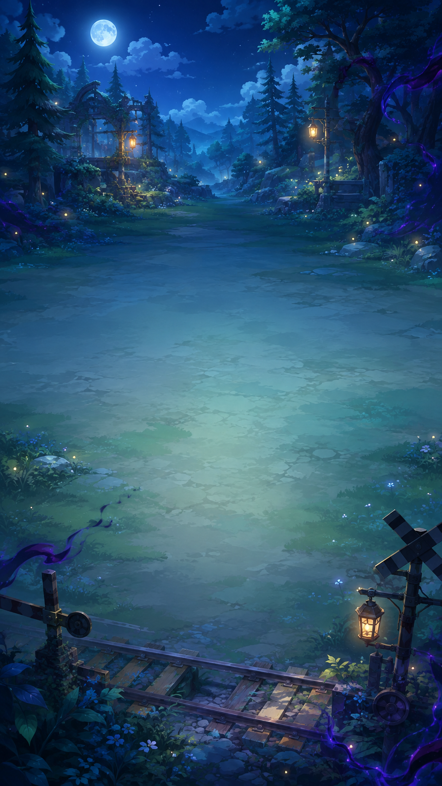

四章节战斗
从微光森林到雷鸣废都，每章拥有独立敌人、环境与 Boss。

GAME DEVELOPMENT · COCOS CREATOR
Version 1.0 PreviewFirefly Train: Mistland Expedition
原创竖屏 Roguelike 射击游戏
《萤火列车：雾境远征》是一款基于 Cocos Creator 3.8.8 与 TypeScript 独立开发的竖屏 Roguelike 射击游戏。操控林茉或罗恩守护列车，在四章节远征中构筑随机能力、装备与战斗流派。
查看 V1.0 版本说明 ↗围绕移动生存、随机构筑与列车防守组成完整远征流程。
从微光森林到雷鸣废都，每章拥有独立敌人、环境与 Boss。
双角色拥有不同定位、攻击表现与主动技能。
局内升级三选一，组合弹道、火力与生存能力。
武器、核心、装置，以及弹匣与自动换弹机制。
Player HP、Shield、Lives 与战斗拾取共同构成生存循环。
普通、精英、远程敌人与章节专属战斗机制。
阶段变化、技能预警与独立战斗表现。
提供 Web 在线体验与 Android ARM64 测试版本。
优先在线体验，也可以下载 Android 测试版。
无需安装，直接在浏览器中开始竖屏远征。
在线试玩版本 1.0.0 · ARM64 · 竖屏 · 约 116.5 MiB
下载 APK → 在 Android 设备安装。尚未完成完整真机验收。
下载 Android 测试版部分手机安装网站直接分发的 APK 时，可能显示“未知来源应用”安全提示。请仅在确认文件来源可信后，由用户自行决定是否允许安装。